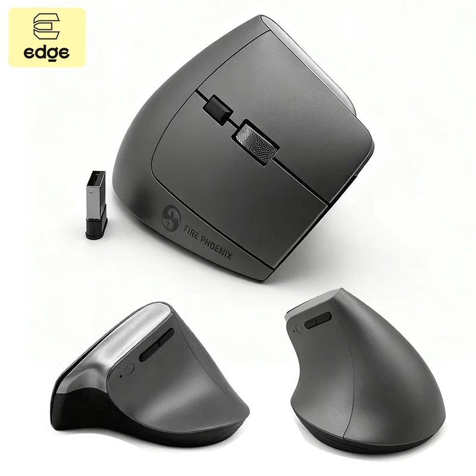
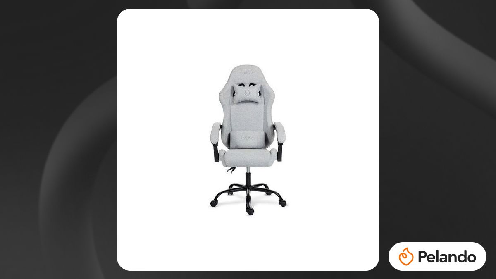

Provavelmente vou pedir para fazer com impressão 3d



será que esse setup vai ajudar na hora de criar os arquivos?
Pelo menos sinto que está um pouco mais ergonomico
porém ainda sinto que o teclado ainda não está ajudando na questão ergonomica, a mão direita ainda sente desconforto na hora de digitar
será que é o teclado ou a posição das mãos?
será que se eu digitar com os cotovelos apoiados melhora a ergonomia?
se sim então terei um problema, pois mexo com notebook e não tenho espaço para apoiar os cotovelos
A não ser que futuramente consiga algum suporte para os cotovelos ou consiga montar um desktop com o monitor em um suporte para que não fique tão desconfortavel na hora de digitar
e também o teclado é um pouco duro, o que pode ser um problema para mim pois trabalho o dia todo com movimentos repetitivos, e isso pode acabar fazendo com que ocorra uma lesão por esforço repetitivo... ou até um problema mais grave como a síndrome do túnel do carpo
então talvez seja melhor eu investir em um teclado mais macio, ou até mesmo um teclado mecânico, que tem uma resposta mais rápida e pode ser mais confortável para digitar por longos períodos de tempo, tipo aqueles teclados dividos ao meio, que ajudam a manter as mãos em uma posição mais natural e reduzem a tensão nos pulsos
mas isso é algo que eu preciso pesquisar mais, para ver qual é o melhor teclado para mim, e também para ver se é algo que eu posso investir agora ou se é algo que eu posso deixar para depois
porém no momento o que eu preciso fazer é justamente conseguir terminar de montar o computador para que eu possa tirar o notebook do setup e começar a usar o desktop, pois facilitará na disposição de perifericos em cima da mesa
e também me ajudará a ter uma melhor ergonomia, pois poderei ajustar a altura do monitor e do teclado para que fique mais confortável para mim
o pc já esta quase montado, e ainda estou procurando a melhor ergonomia para o setup até que eu tenha dinheiro suficiente para comprar as coisas faltantes
agora que eu coloquei a hub usb para conectar os monitores e deixar o notebook fechado vai melhorar muito o desempenho e organização na mesa, porém o teclado que eu estou utilizando não é dos melhores, principalmente a tecla backspace que é muito pequena e longe do dedo e proximo demais da tecla delete
proximo item para o pc assim que o desktop chegar, um teclado de melhor qualidade, o mouse ergonomico pra ornar com o teclado e uma cadeira decente para poder ficar mais confortável
Provavelmente vou pedir para fazer com impressão 3d

